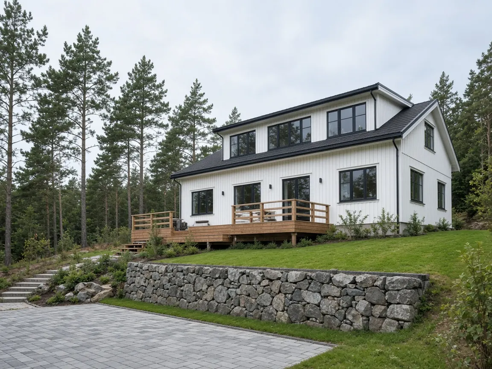
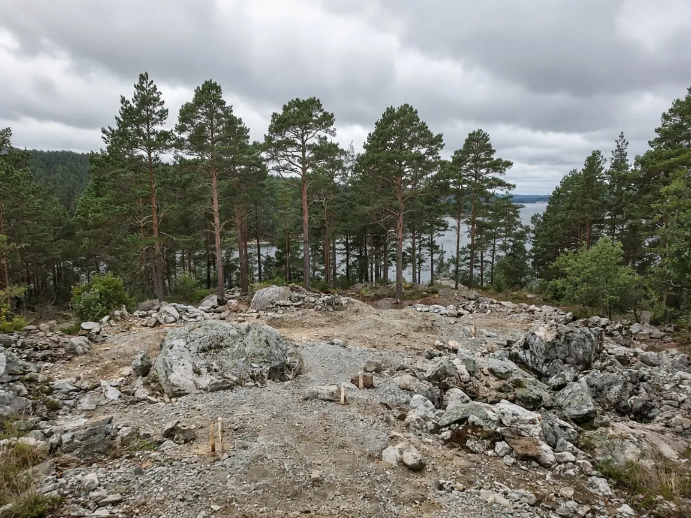

Arkitekt, ingeniør og byggmester – under samme tak
Fra første skisse og byggesøknad til nøkkel i hånda. Ingen jobb er for liten, og befaringen er gratis.
Bakgrunnsbildet er en KI-illustrasjon, ikke et Olsenbygg-prosjekt.
Tjenester
Fra olsenbygg.com – byggmestertjenester for private, næring og offentlige på sentrale Sørlandet.
Slik jobber vi
Gratis befaring
Vi ser på tomta eller huset og hører hva du ønsker.Tegning og prosjektering
Arkitekt og ingeniør lager tegninger i 1:50 og beregninger.Søknad
Vi håndterer byggemelding og søknad mot kommunen.Bygging
Egne byggmestere og formenn følger jobben tett.Overlevering
Gjennomgang og nøkkel i hånda til avtalt tid.
Fra tomt til hjem
Dra i håndtaket, bruk hurtigknappene eller piltastene. Begge bildene er KI-genererte illustrasjoner – ikke bilder av et Olsenbygg-prosjekt.

FØR · KI-illustrasjonETTER · KI-illustrasjonFolk og prosjekter
Fagfolkene
Plass til bilde og presentasjon av byggmestere, ingeniør og arkitekt under samme tak i Grimstad. Fylles ut av Olsenbygg.
Kundeomtale
«Her kommer en ekte kundeomtale med navn, prosjekt og samtykke.»
Referanseprosjekt
Bilder, sted, år og omfang fra et ekte prosjekt (f.eks. «Enebolig i Lillesand» som er omtalt på olsenbygg.com).
Prosjekter
Nybygg – enebolig på Sørlandet
Arkitekttegnet enebolig fra byggesøknad til nøkkelferdig overlevering. Ekte prosjektbilder legges inn av Olsenbygg.
Tilbygg og påbygg – ekstra etasje og stue
Utvidelse av eksisterende familiebolig med tegninger i 1:50 og komplett tømrerleveranse. Ekte prosjekt legges inn av Olsenbygg.
Rehabilitering og etterisolering av murbygg
Oppgradering av fasade, vinduer og etterisolering for lavere energibruk. Ekte prosjekt legges inn av Olsenbygg.
HMS og bærekraft
Etterisolering av eldre murbygg og rehabilitering gir lavere energibruk og lengre levetid. Sertifiseringer, HMS-rutiner og miljøtiltak fylles inn av Olsenbygg.
EKSEMPEL – ingen sertifiseringer er oppgitt herJobb hos oss
Dyktig tømrer, snekker, lærling eller ingeniør på Sørlandet? Ledige stillinger og åpen søknad publiseres her.
EKSEMPELOfte stilte spørsmål
Koster befaringen noe?
Nei, olsenbygg.com oppgir at befaringen er gratis og uforpliktende.
Tar dere små jobber?
Ja – «Ingen jobb er for liten», ifølge olsenbygg.com. Vi tar alt fra mindre endringer til komplette nybygg.
Kan dere lage tegninger og søke om byggetillatelse for meg?
Ja, med arkitekt, ingeniør og byggmester under samme tak håndterer vi tegninger i 1:50, salgstegninger, nabovarsel og byggemeldinger mot kommunen.
Hvor nøyaktig er estimatet i Sci-Fi Lab?
Det er et grovt eksempelestimat for materialer. Endelig pris får du først etter gratis befaring og skriftlig tilbud.
Kontakt
Olsenbygg Grimstad AS
Industriveien 15, 4879 Grimstad
📞 415 15 588
✉️ rolf@olsenbygg.com
🌐 www.olsenbygg.com
Man–fre 07–15
Kilde: tredjeparts oppføring – ikke bekreftet av bedriften.
Kart lastes først når du ber om det (ingen sporing før det).